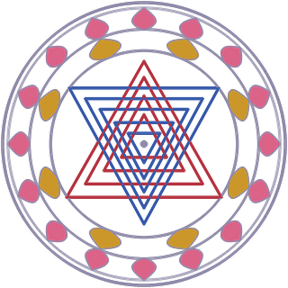
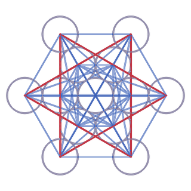
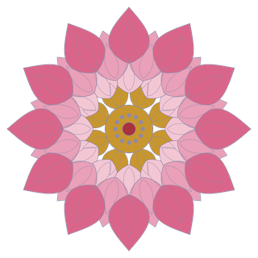
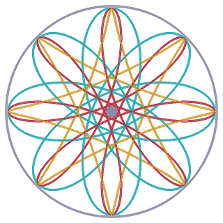

What a mandala is, and where mandalas come from.
A mandala is a pattern built outward from a single center point, usually inside a circle, so that every ring and repeated shape points back to the middle.
The word is Sanskrit, maṇḍala, and it most simply means “circle.” In Hindu and Buddhist practice a mandala is more than decoration: it is a diagram of the cosmos, or of a sacred dwelling, that a practitioner studies, visualizes, or walks through in the mind during meditation and ritual. Outside those traditions the word has stretched to cover almost any radially symmetric design, and psychologists use it for the circular images people tend to draw when they are trying to find balance.
Most mandalas, however different they look, are assembled from the same few parts:

Sri Yantra
Metatron’s Cube
Lotus mandala
RosetteThe idea is older than any single religion, and it grew up in several places at once, but the mandala as we usually mean it took shape in ancient India.
The word already appears in the Rigveda, one of the oldest Sanskrit texts, whose ten books are each called a maṇḍala. From there the circle-and-center form moved into Hindu temple planning and into the yantra, a mystical diagram such as the Sri Yantra. Early Buddhist monuments used the same logic: a stupa is a domed mound laid out around a central axis, and worshippers walk around it clockwise.
The detailed, painted mandala arrived with Vajrayana (tantric) Buddhism, which took shape in India around the seventh and eighth centuries CE. It then traveled along trade routes in several directions.
Circular, centered designs also grew up independently elsewhere: Navajo sand paintings, Celtic knotwork, the star patterns of Islamic tilework, and the rose windows of Gothic cathedrals all use the same radial logic, even though only some of them are called mandalas by the people who made them. That recurrence is part of the appeal. A circle with a center is one of the most natural ways for people to arrange a picture of the world.